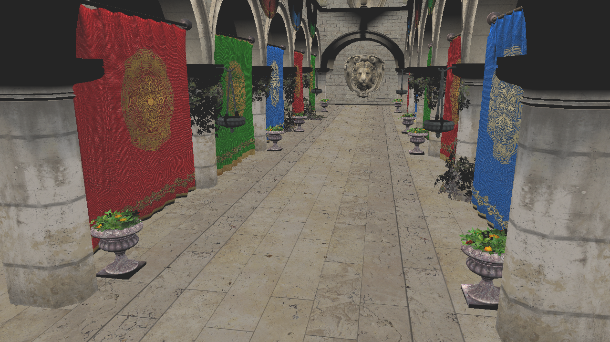
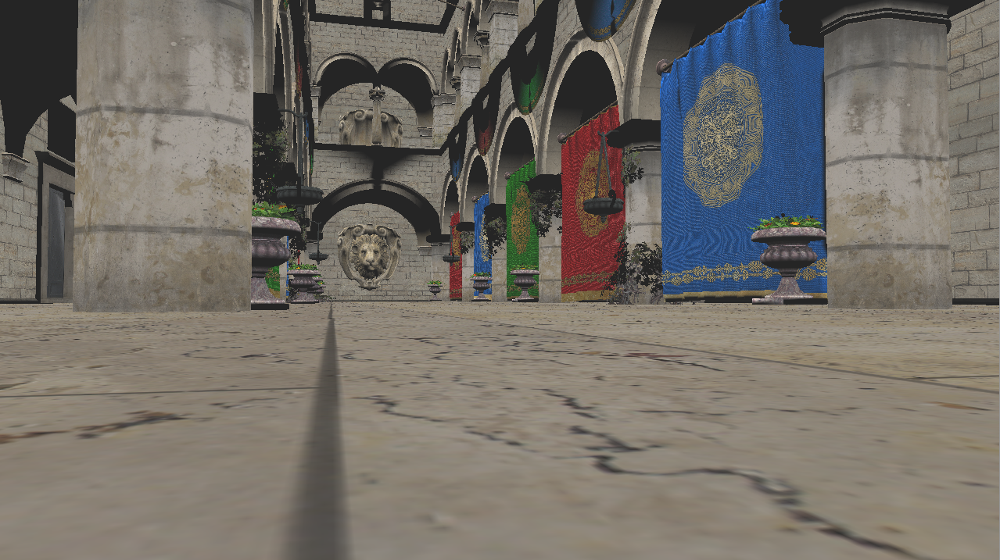
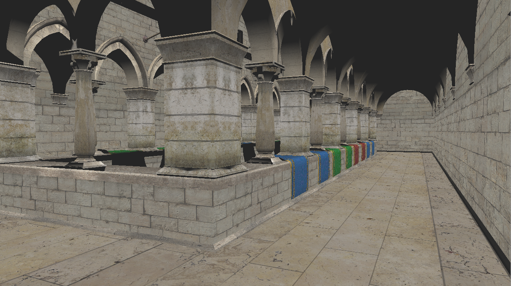

OpenGL - GLSL - C++
About
The SocksAndSandals Graphics Engine uses OpenGL. The unusual name is a joke based off the AIE-Bootstrap Engine. It was initially created for a
project at AIE. The current capability of the engine is to import .obj files that allow for textures and normal maps. The objects are lit by
a directional phong light.
Using WASD, the user is able to fly around the scene and mouse to look around.
Feel free to poke around the repo here.
 
